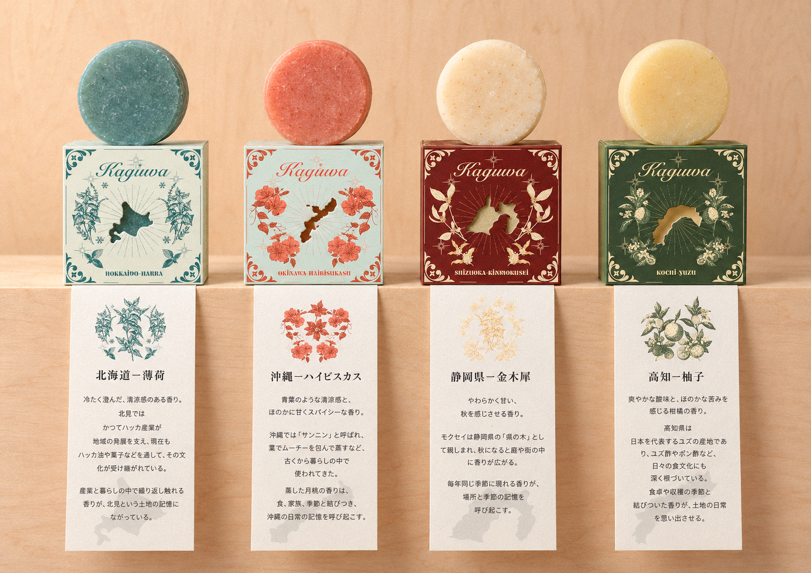
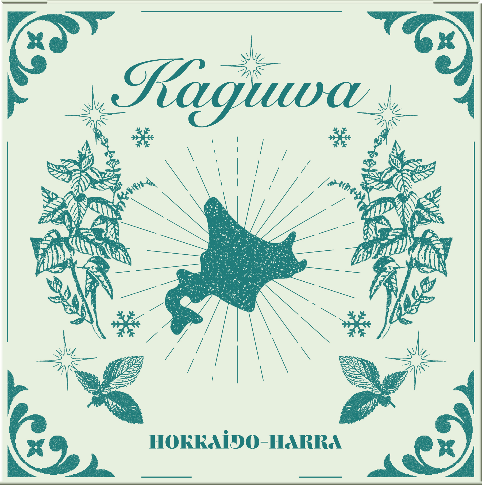
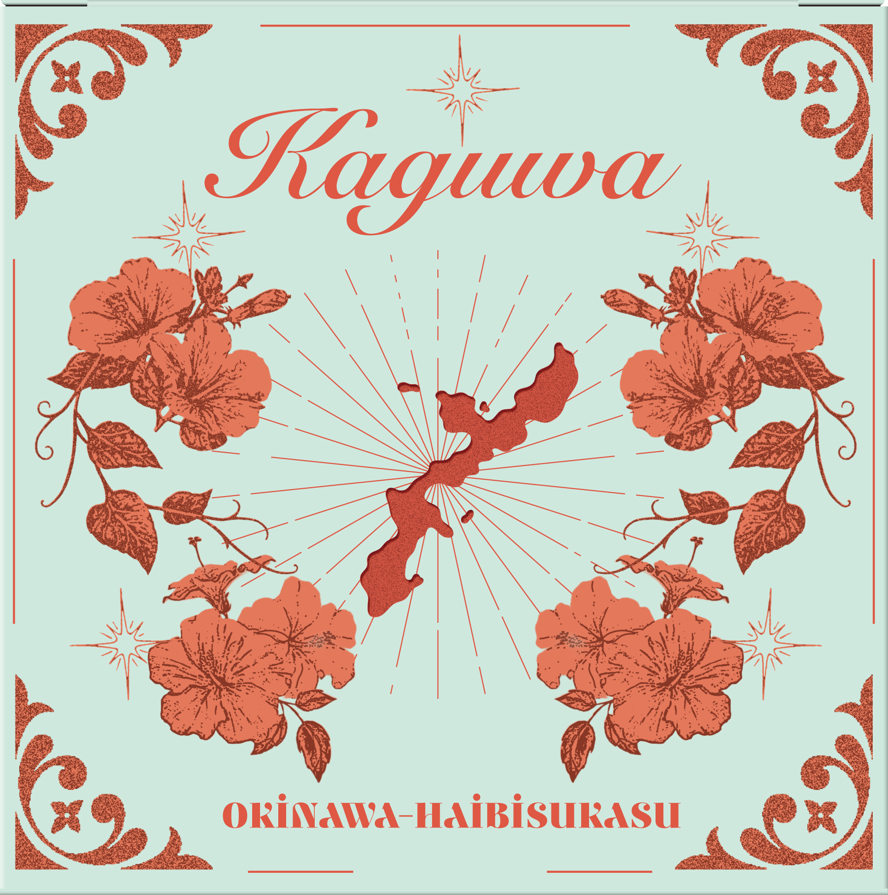
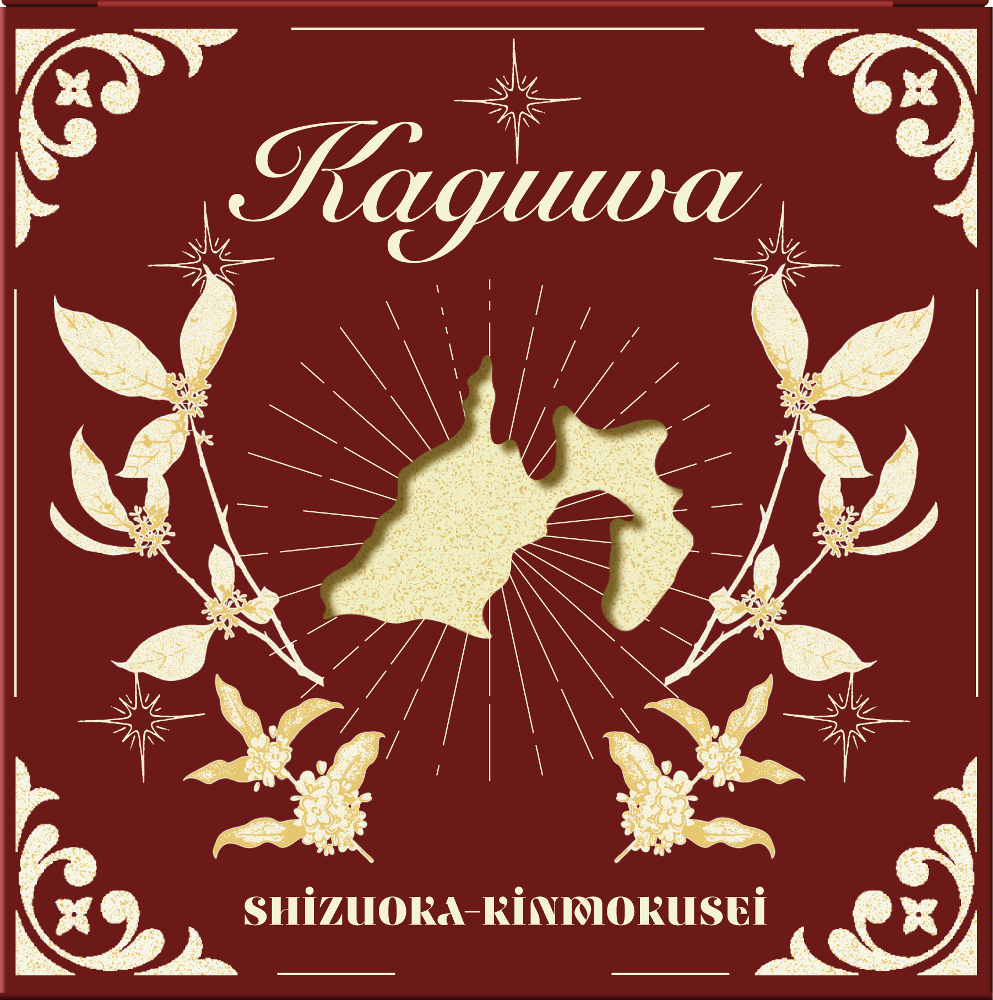
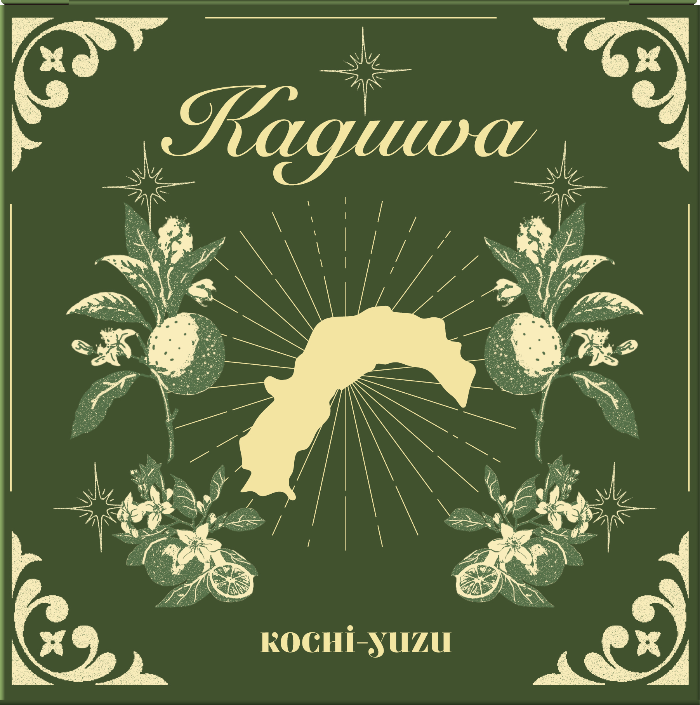
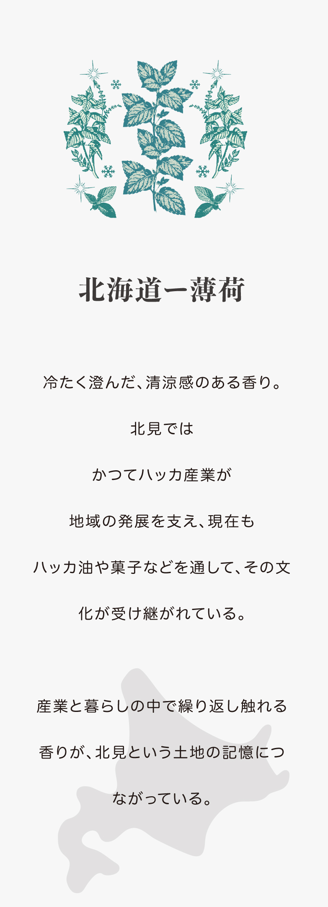
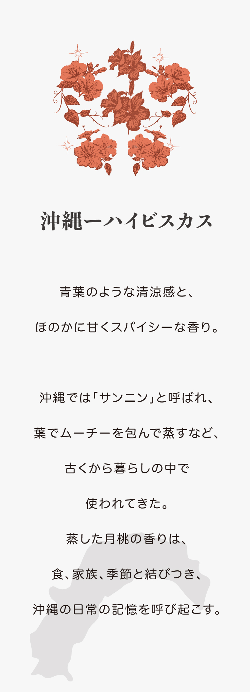
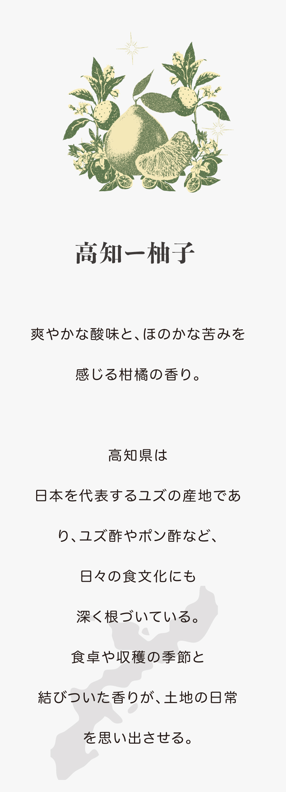
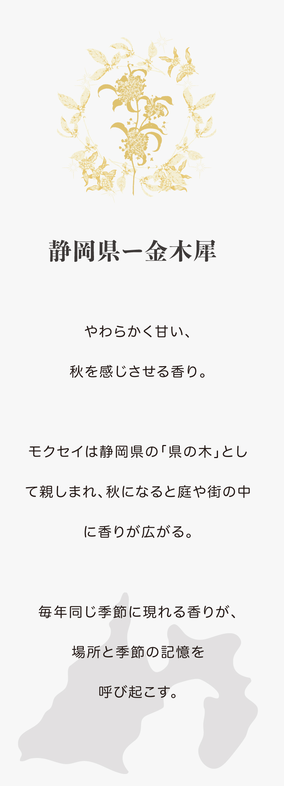

Traveling
Soap
Packaging Design that Evokes the Scents of Place
This project explores soap packaging inspired by aromatic ingredients rooted in different regions of Japan, with the aim of evoking memories associated with each place through scent.

01 / Packaging
Regional Packaging




02 / Scent labels
Scents of Place



